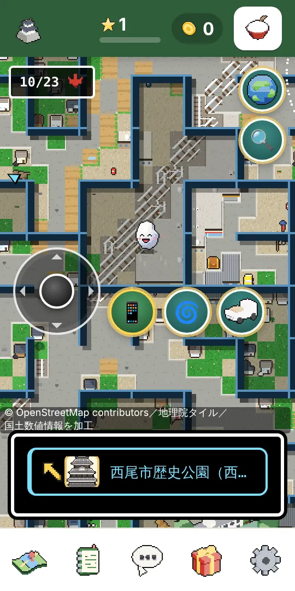
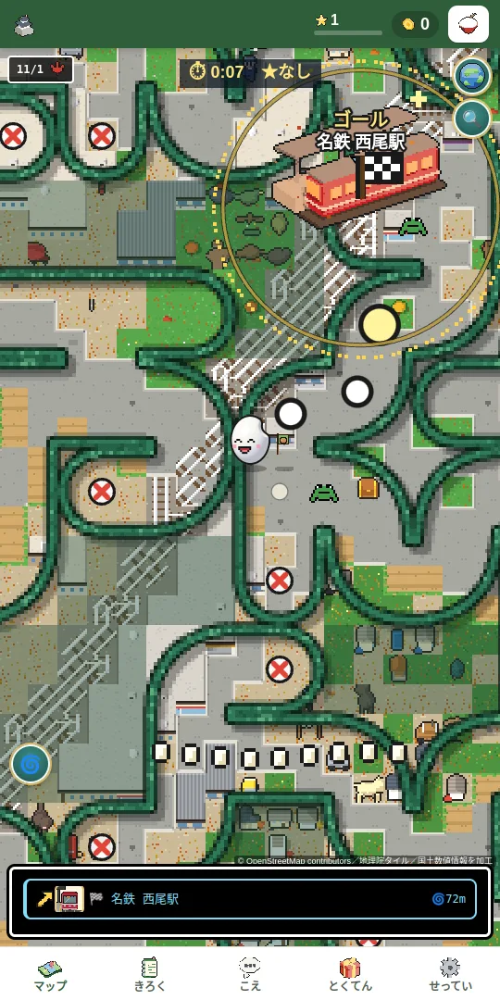
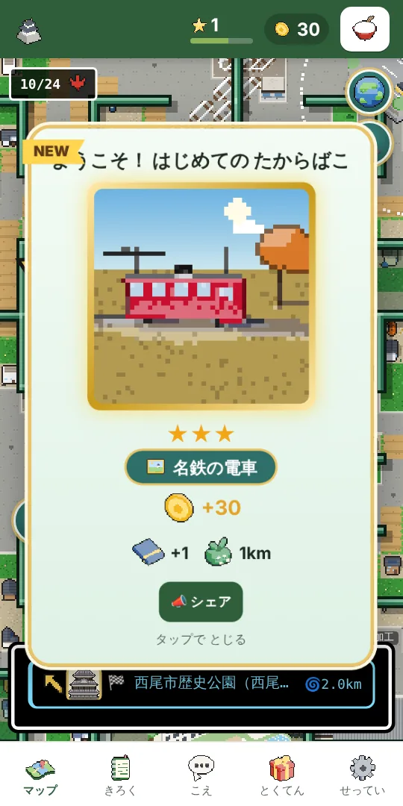
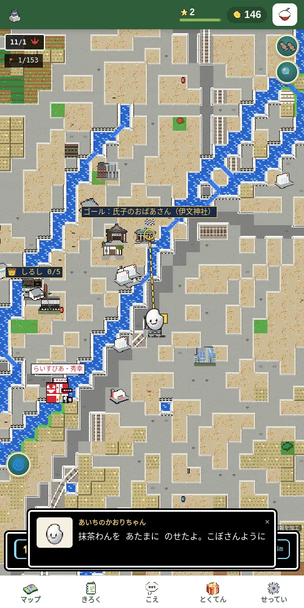
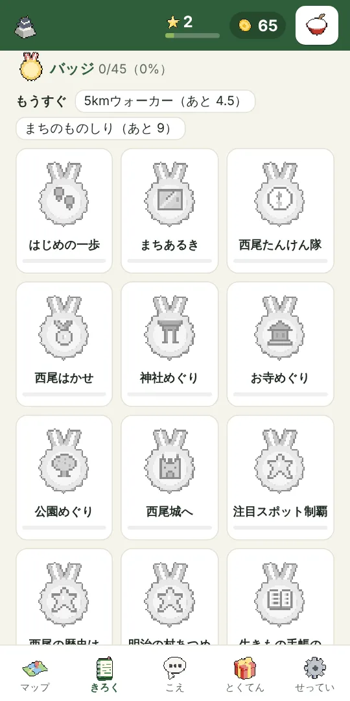

ミニゲーム「にしおジャンプ」名所で その日 あそべる
🌀 西尾めいろ地図が 迷路に
🗾 モデルコース順に まわって スタンプ
色が濃いほど たくさんめぐったよ
たからばこや チェックインで 1枚。場所・季節・天気で 変わる
声で ゲームが そだつ。名所や 意見を 送ってね
🗓 今週のお題答えた！
個人情報は 書かないで。受付番号で お知らせする
🔑 ひきつぎの あいことば端末を 変えるときに 使う
現在地は送らない。記録はこのスマホだけ。地図表示で見ている場所は、地図のサービスに伝わる。「こえ」で「いまいる場所の近く」を選んだときだけ、約100mに丸めて送る。
地図：地理院タイル／スポット：© OpenStreetMap contributors
土地利用・境界：「国土数値情報」（国土交通省）を加工
ドット絵：Wikimedia Commons の写真がもと（一覧）
まちの人は 架空の人物です
運営：近藤米穀店 らいすぴあ（西尾市）
お米が ころころ、西尾をめぐろう
🍚 スマホを傾けると、お米が ころころ転がる。
🌀 西尾の地図ぜんぶが、本物の道で できた 迷路に。行き止まりを よけて、名所から名所へ ころころ。
坂は 本当の西尾の高低差で、ひとりでに転がり下ります。西尾の名所に転がりこむとポイント。たからばこと、西尾ならではのドット絵が集まります。まちの人の話が、次の行き先をすすめてくれます。
遊びかたをえらんでください（あとから切り替えられます）
✓ 無料✓ 登録なし✓ アプリ不要✓ 位置情報なし
押すと すぐ 地図が 出ます
📱 iPhone は、右上の「📱 かたむけて ころがす」を 押すと「動きと方向」の確認が出ます。「許可」で 傾けて遊べます（地図を タップしても 遊べます）
⚠️ 立ち止まって 遊んでね

地図が めいろに
めいろで ゴールへ
ドット絵をあつめる
名所をめぐる
バッジをそろえる🧪 試作版
西尾のお米屋さん らいすぴあ（ricepia.jp）
🌏 せかいちず🌀 めいろ
🍚 お疲れ様です